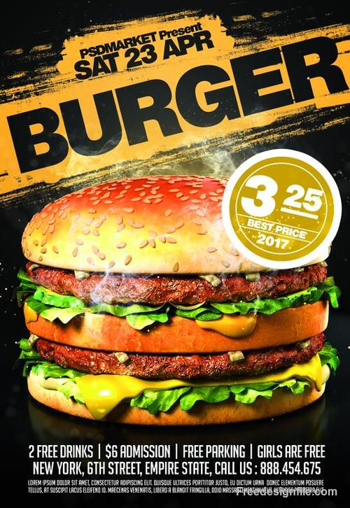
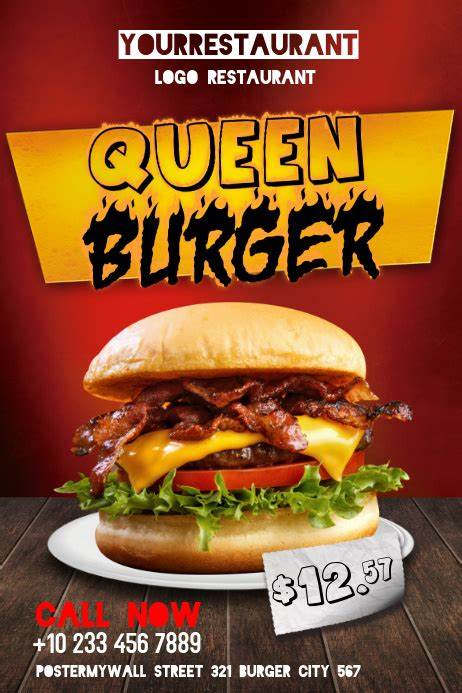

VISIT US |
Table Website |
|
|---|---|---|
Spoken Poetry
“There are no allies, only actions.
What we believe matters, but only
as far as it impacts what we do. And
the good news here is that we can do
something. We must do something.
And we will do something."
“My excuse is pumpkin ice cream and 3 seasons of Luther on Netflix,
is that corn dogs go great with a side of feelings,
is that I actually really like the two little dimples right above my big fat ass.”
“Listen, you have to stop getting
out of bed like an oil spill. You’re
not a flat tire at 2 am. Stop acting
like an accident. You are not an
accident. You’re an apple on a
pine tree in a room full of lemons.”
“Natasha’s mom reminds us
we’re ‘African-American’ in
her home. Black describes a
thing not people. Which came
first, the object or the color?”
“I know I was supposed to
say something to him in the casket,
but there isn’t a word that means goodbye
and I’ll miss you and please come back to me somehow
and let me know when you get there?” |
  | |